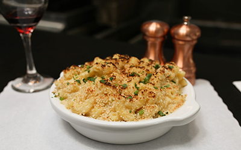

My Favorite Food
Mac and Cheese
Homemade Mac and Cheese Recipe!

Ingredients
- macaroni
- cheddar cheese
- parmesan cheese
- milk
- butter
- flour
- bread crumbs
- paprika
Directions
- Cook macaroni and drain
- Melt butter and add flour, milk, and cheeses
- Pour into dish bowl
- Add sauce and stir
- Melt butter in skillet then add breadcrumbs
- Sprinkle with paprika
- Bake at 350 degrees F for 30 minutes
For more information, check out click here